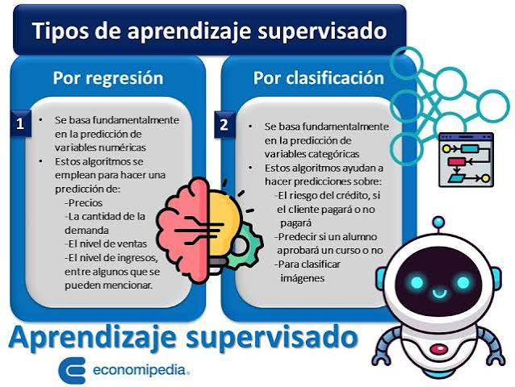
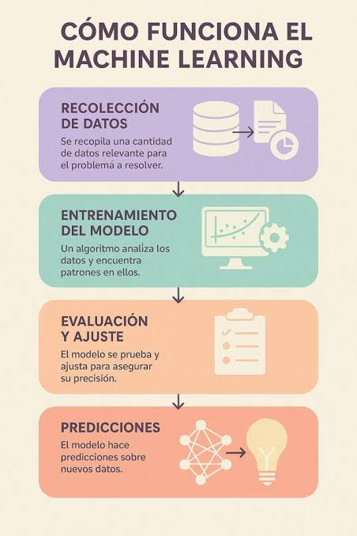

< Definición y características principales El aprendizaje automático supervisado es una rama de la inteligencia artificial donde los modelos se entrenan utilizando datasets etiquetados. Esto significa que, para cada dato de entrada, el algoritmo ya conoce la respuesta correcta o "verdad básica", permitiéndole aprender patrones lógicos para realizar predicciones sobre datos nuevos./p>
. Definición y características principales La clasificación y la regresión son los dos pilares fundamentales del Aprendizaje Automático Supervisado (IBM). Ambos paradigmas entrenan modelos matemáticos utilizando datos históricos etiquetados (es decir, datos de entrada vinculados a una respuesta correcta conocida) para aprender patrones y realizar predicciones precisas sobre datos nuevos.

1. Definición y características principales El aprendizaje supervisado es una rama fundamental del Machine Learning que consiste en entrenar modelos predictivos utilizando un conjunto de datos etiquetados. Esto significa que, por cada entrada dada al algoritmo durante su entrenamiento, se conoce de antemano el resultado correcto (la "verdad básica"). El modelo analiza esta información histórica para descubrir patrones matemáticos subyacentes y aprender a asociar las nuevas variables de entrada con sus respectivas salidas predictivas. Características principales • Uso de datos históricos etiquetados: El entrenamiento requiere obligatoriamente una correspondencia explícita entre las características de entrada y las etiquetas de salida. • Mapeo de funciones: Su objetivo técnico es encontrar una función óptima \(y = f(x)\) capaz de generalizar predicciones sobre datos nunca antes vistos. • Retroalimentación por error: Durante el entrenamiento, los algoritmos calculan la diferencia entre el valor real y el predicho mediante una función de pérdida, optimizando continuamente sus parámetros.
